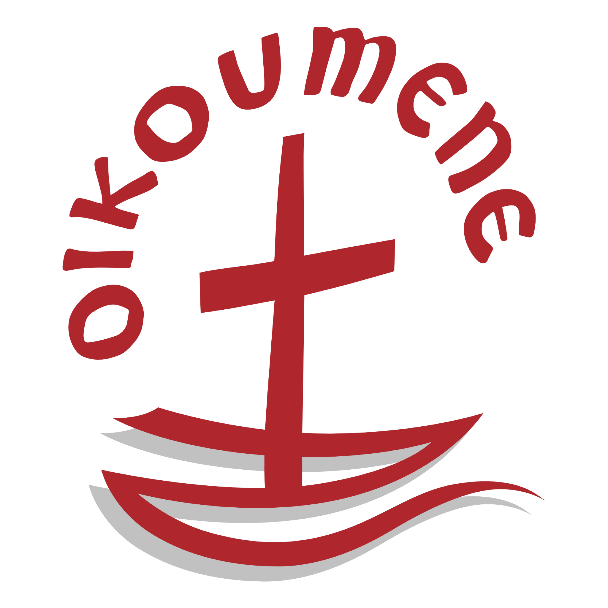

-1-MasterItem.svg)
Stories of Westminster United Church & its People / Page
124
possible after the end of WW II. Then, after years of preparation,
the stage was set for the founding Assembly of that Council in Amsterdam in
September 1948, i felt that the Christian Church was in the bright dawn of a
new and better day … The prodigious labor of organizing that first assembly
had started with fourteen clergymen meeting in Utrecht (Holland) initially in
1938. “Largely through the work of this committee the founding Assembly of
The WCC opened with delegates from 150 Churches from
40 countries.” (Today there are 348 churches from 110 countries
in the WCC.)
Our Clerk of Session surprised Howse with a cheque to cover his and Esther’s attendance at the
founding sessions. The United Church had appointed him an alternate delegate and
the Anglican
Church, being one delegate short had appointed Esther as their alternate
delegate. For Howse the
experience was a once-in-his-life time to see and hear leading representatives
of Christian Churches
for all over the world. Names became faces and face became voices, “a memory to be cherished.”
But what happened after Council is of interest to us.
Ernest and Esther set out across Germany as a guests of Hilfswerk, a German
relief organization:
“While visiting the city of Hamburg I was taken to the dockside”( to a half ruined terminal where
a huge pile of relief bundles had just arrived.)” One of the workmen climbed to the top of the pile
and tumbled down a bale which landed in front of me. I looked at the bale and I
could not believe
my eyes. A large familiar label was sewn into the outer sacking: on it was
printed “Westminster
United Church, Winnipeg.” It was part of the first bundle our women had contributed
to Canadian Church Relief Abroad.”
When they returned to Winnipeg they set about preparing for their move to Bloor
Street United
Church, Toronto. “I was aware that some in Winnipeg would regard my departure as a public
improvement. But one must be measured in part by the enemies one makes.”
Table
of Contents
Rev. Ernest Marshall Howse
